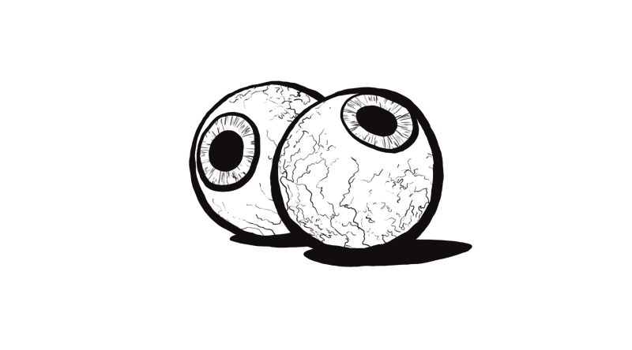

Process
I sketched the keyframes on paper, the final frames were drawn in Photoshop, and the interaction mockups were created using After Effects.

I love tattoo artists and I created a set of micro-interactions that follow a hand-drawn, punk, tattoo design style. It was so fun to bring my love for doodles and stark black and white drawings to life through these fun little prototype clickables.
I sketched the keyframes on paper, the final frames were drawn in Photoshop, and the interaction mockups were created using After Effects.
Perfect for moving on from a content warning, a landing page, or completing a profile sign-up.

This toggle is meant to turn on or off infinite scrolling to help combat the dreaded doom scroll.
The user can filter tattoos by placement on the body as well!
These two are so cute and creepy. The eyes were an instant success and I'm glad the burning rose checkboxes brought something other than gore while keeping it metal.

Tattoos range from line art to blackout, so this will help the user filter based on density.

This project was so fun and it helped me brush up on my doodling skills as well as design. Hope you enjoyed!
back to home 